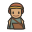
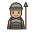
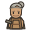
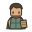
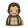
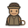
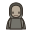

용사
32px · 64px
world-heroCHINESE WORD TACTICS / ICONS 0.1
초기 아이콘 기본형과 스토리에 등장하는 인물 아이콘을 실제 표시 크기에서 함께 비교해.
제작 초안 · NPC 스토리 화면 적용 · iPhone 실기기 검수 전
왼쪽은 32px, 오른쪽은 형태를 살펴보는 64px야.
32px · 64px
world-hero32px · 64px
world-wolf32px · 64px
world-exit32px · 64px
world-stele32px · 64px
world-gate-closed32px · 64px
world-gate-open32px · 64px
world-ruin32px · 64px
world-thorns왼쪽은 실제 대사 화면의 40px, 오른쪽은 형태를 살펴보는 80px야.

중년 여성 · 머릿수건과 가방
character-merchant
젊은 남성 · 가벼운 경비 장비
character-gatekeeper
노년 여성 · 은빛 머리와 망치
character-artisan
성인 남성 · 장부
character-marketkeeper
성인 여성 · 방 열쇠
character-innkeeper
성인 남성 · 모자와 고삐
character-driver
성별 없는 중성 실루엣
character-resident20px와 40px를 함께 놓았어. 바탕 상자는 아이콘에 포함되지 않아.
20px · 40px
ui-menu20px · 40px
ui-back20px · 40px
ui-restart20px · 40px
ui-undo20px · 40px
ui-wait-turn20px · 40px
ui-inspect20px · 40px
ui-close위 버튼은 배치 예시야. 게임 행동을 실행하지 않아. 각 조작 영역은 최소 44×44px야.
기본형 하나를 회전했어. 실제 이동 판정은 아직 연결하지 않았어.
위
오른쪽
아래
왼쪽
아래는 48px 칸에 놓은 정적 검토 예시야. 실제 스테이지가 아니야.
닫힘 / 열림
반응 전 / 반응 후
깃발과 라벨 / 유적 바닥을 남겨둬.
위는 통과 전, 아래는 통과 후야. 연결된 바닥과 작은 흔적으로 구분해.